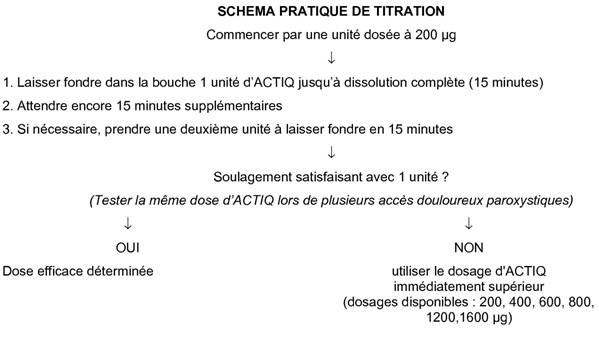

RÉSUMÉ DES CARACTÉRISTIQUES DU PRODUIT
ANSM - Mis à jour le : 28/05/2014
ACTIQ 1200 microgrammes, comprimé avec applicateur buccal
2. COMPOSITION QUALITATIVE ET QUANTITATIVE
Chaque comprimé contient 1200 microgrammes de fentanyl (sous forme de citrate).
Excipients : chaque comprimé contient comme excipients du nébulisat de glucose (la teneur totale en glucose par unité est d'environ 2 grammes), du saccharose (environ 30 mg contenu dans la colle alimentaire liant le comprimé à l'applicateur) et du propylène glycol (qui rentre dans la composition de l'encre servant au marquage des comprimés et de l'arôme artificiel de baies).
Pour la liste complète des excipients, voir rubrique 6.1.
Comprimé avec applicateur buccal.
ACTIQ se présente sous la forme d'une matrice de poudre comprimée, blanche à blanc cassé, fixée à l'aide de colle alimentaire à un applicateur en plastique radio-opaque incassable sur lequel est inscrit le dosage.
4.1. Indications thérapeutiques
ACTIQ est indiqué pour le traitement des accès douloureux paroxystiques chez des patients recevant déjà un traitement de fond morphinique pour des douleurs chroniques d'origine cancéreuse.
Un accès douloureux paroxystique est une exacerbation passagère d’une douleur chronique par ailleurs contrôlée par un traitement de fond.
Les patients recevant un traitement de fond morphinique sont ceux prenant au moins 60 mg de morphine par voie orale par jour, au moins 25 microgrammes de fentanyl transdermique par heure, au moins 30 mg d’oxycodone par jour, au moins 8 mg d’hydromorphone par voie orale par jour ou une dose équi-analgésique d’un autre opioïde pendant une durée d’au moins une semaine.
4.2. Posologie et mode d'administration
Afin de réduire au minimum les risques d’effets indésirables liés aux morphiniques et de déterminer la dose la plus "efficace" adaptée à un patient, il est indispensable que les patients soient étroitement surveillés par des professionnels de santé durant la période de titration.
ACTIQ n’est pas interchangeable sur la base d'une équivalence de dose avec d’autres fentanyl à action rapide prescrits pour les accès douloureux paroxystiques d'origine cancéreuse, étant donné que les profils pharmacocinétiques et/ou les schémas posologiques de ces produits sont significativement différents. Les patients traités pour des accès douloureux paroxystiques d'origine cancéreuse doivent être informés de ne pas utiliser simultanément plusieurs fentanyl à action rapide, et d’éliminer tout autre produit contenant du fentanyl antérieurement prescrit pour les accès douloureux paroxystiques (ADP) lors du passage à ACTIQ. Le nombre de dosages différents d’ACTIQ mis à disposition du patient, à tout moment, doit être réduit au minimum pour éviter les erreurs et un surdosage potentiel.
Toute unité d’ACTIQ non utilisée et dont le patient n’a plus l’utilité doit être dûment éliminée.
Il faut rappeler aux patients qu'ACTIQ doit impérativement être conservé hors de la portée des enfants.
Mode d’administration
ACTIQ est destiné à l’administration par voie buccale transmuqueuse, par conséquent, le comprimé doit être placé contre la face interne de la joue. A l’aide de l'applicateur, il faut ensuite déplacer le comprimé contre la muqueuse des joues afin d'optimiser le degré d’exposition de la muqueuse au produit actif.
Il faut laisser fondre le comprimé d'ACTIQ au contact de la muqueuse, sans le sucer, le mâcher ou le croquer, car l’absorption du fentanyl par la muqueuse buccale est plus rapide que l’absorption systémique par voie gastro-intestinale.
Les patients souffrant de sécheresse buccale peuvent humidifier leur muqueuse buccale en buvant un peu d'eau avant la prise du médicament.
L'unité d’ACTIQ doit être consommée en 15 minutes. Si des effets morphiniques excessifs apparaissent avant que le comprimé d'ACTIQ soit entièrement dissout, celui-ci devra être immédiatement retiré de la bouche et il devra être envisagé de réduire les doses ultérieures.
Chez l’adulte
Adaptation posologique et traitement d’entretien
Il convient de déterminer la posologie optimale d'ACTIQ pour chaque patient, c'est-à-dire la dose produisant l'effet antalgique recherché avec un minimum d'effets indésirables. Lors des études cliniques, il n’a pas été établi de relation entre la dose efficace d'ACTIQ dans les accès douloureux paroxystiques et la dose du traitement morphinique de fond.
a) Titration
Avant de déterminer la posologie d'ACTIQ chez un patient, il est nécessaire de s’assurer que ses douleurs chroniques sont contrôlées par un traitement morphinique de fond et qu’il ne présente pas plus de 4 accès douloureux paroxystiques par jour.
La dose initiale d'ACTIQ doit être de 200 microgrammes, avec augmentation de la posologie, si nécessaire, conformément à la gamme de dosages disponibles (200, 400, 600, 800, 1200 et 1600 microgrammes). Les patients doivent être surveillés avec attention jusqu’à l'obtention de la dose procurant une analgésie efficace et des effets indésirables acceptables, avec une seule unité d'ACTIQ par accès douloureux paroxystique. Cette dose est définie comme étant la dose efficace.
Durant la titration, si une analgésie satisfaisante n’est pas obtenue dans les 30 minutes suivant l’administration d'une première unité d’ACTIQ (c’est à dire 15 minutes suivant la fin de la dissolution d’une unité d'ACTIQ), une seconde unité d'ACTIQ du même dosage pourra être utilisée. En aucun cas il ne faudra utiliser plus de deux unités d'ACTIQ pour traiter un même accès douloureux paroxystique. Avec le dosage de 1600 microgrammes, il ne sera vraisemblablement nécessaire d'administrer une seconde dose que chez une minorité de patients.
Si le traitement de plusieurs accès douloureux paroxystiques consécutifs requiert plus d’une unité d'ACTIQ par accès, il convient d’envisager de passer au dosage immédiatement supérieur.

b) Traitement d'entretien
Une fois la dose efficace établie (c'est-à-dire un accès douloureux paroxystique est efficacement traité par une seule unité, en moyenne), les patients doivent utiliser cette dose et limiter leur consommation à un maximum de quatre unités d'ACTIQ par jour.
Les patients doivent être surveillés par un professionnel de santé afin de veiller à ce que la consommation maximale de quatre unités d'ACTIQ par jour ne soit pas dépassée.
Réajustement de la dose
La dose d’entretien d’ACTIQ doit être augmentée si le traitement de plusieurs accès douloureux paroxystiques consécutifs requiert plus d’un comprimé par accès. Pour l'ajustement de la dose, les mêmes principes que ceux décrits pour la titration s'appliquent (voir ci-dessus).
Si les patients présentent plus de 4 accès douloureux paroxystiques par jour, il peut être nécessaire de réévaluer la posologie du traitement morphinique de fond. Si celle-ci est augmentée, il peut être nécessaire de réajuster la dose d'ACTIQ utilisée pour traiter les accès douloureux paroxystiques.
Tout réajustement de la posologie du traitement analgésique doit impérativement être surveillé par un professionnel de santé.
Arrêt du traitement
Chez des patients poursuivant leur traitement analgésique morphinique de fond, le traitement par ACTIQ peut généralement être immédiatement arrêté lorsqu'il ne s'avère plus nécessaire.
En revanche, en cas de suspension de la totalité du traitement morphinique, le protocole d'arrêt progressif des morphiniques doit tenir compte de la posologie d'ACTIQ pour éviter l'apparition de symptômes d'un sevrage brutal.
Utilisation chez le sujet âgé
Les sujets âgés se sont avérés plus sensibles aux effets du fentanyl administré par voie intraveineuse. Par conséquent, la titration impose des précautions particulières chez ces patients. Le fentanyl est éliminé plus lentement chez le sujet âgé et sa demi-vie terminale d'élimination est plus longue, ce qui peut entraîner une accumulation du principe actif et majorer les risques d'effets indésirables.
Aucune étude clinique spécifique n'a été menée avec ACTIQ chez le sujet âgé. Néanmoins, au cours des études cliniques, les doses d'ACTIQ permettant un soulagement efficace des accès douloureux paroxystiques ont été plus basses chez les patients âgés de plus de 65 ans.
Utilisation chez les patients présentant une insuffisance hépatique ou rénale
Il convient d’être particulièrement prudent durant la phase de titration chez les patients présentant une insuffisance rénale ou hépatique (voir rubrique 4.4).
Population pédiatrique
Chez les enfants âgés de 16 ans et plus : suivre la posologie adulte
Chez les enfants âgés de 2 à 16 ans : l’expérience clinique concernant l’utilisation d’ACTIQ en pédiatrie, chez des patients recevant déjà un traitement morphinique de fond est limitée (voir les rubriques 5.1 et 5.2). La sécurité et l’efficacité chez les patients âgés de moins de 16 ans n’ont pas été établies ; l’utilisation dans cette population de patients n’est donc pas recommandée.
· Hypersensibilité au fentanyl ou à l’un des excipients d'ACTIQ.
· Patients ne recevant pas de traitement de fond morphinique (voir rubrique 4.1), en raison d’un risque accru de dépression respiratoire.
· Traitement de la douleur aiguë autre que les accès douloureux paroxystiques (ex : douleurs postopératoires, céphalées, migraine).
· Administration concomitante ou interrompue depuis moins de 2 semaines, d'inhibiteurs de la monoamine-oxydase (IMAO).
· Dépression respiratoire sévère ou obstruction sévère des voies aériennes
4.4. Mises en garde spéciales et précautions d'emploi
Les patients et leurs soignants doivent être informés de la nécessité de conserver toutes les unités hors de portée des enfants et d’éliminer soigneusement, comme indiqué ci-dessous, toutes les unités, utilisées ou non. Chez tout patient ambulatoire, il est recommandé d'évaluer les éventuels risques d'exposition accidentelle d'enfants au médicament.
ACTIQ ne doit en aucun cas être administré à des patients ne recevant pas un traitement de fond par des morphiniques, en raison d'un risque accru de dépression respiratoire pouvant être fatale. Avant de commencer un traitement par ACTIQ, le traitement morphinique de fond doit être stabilisé et le patient doit continuer le traitement par les morphiniques pendant la prise d’ACTIQ.
Comme avec tous les morphiniques, une accoutumance, une dépendance physique et/ou psychologique et l’abus de fentanyl sont susceptibles d’apparaître. Cependant, la toxicomanie iatrogène est rare dans le cadre de l’utilisation strictement thérapeutique des morphiniques. Les risques sont considérés comme faibles chez les patients cancéreux souffrant d’accès douloureux paroxystiques, mais peuvent être plus élevés chez les patients ayant des antécédents de toxicomanie ou de dépendance à l’alcool.
Les patients traités par des morphiniques requièrent une surveillance particulière en ce qui concerne les signes d’abus ou d’addiction.
Comme pour tous les morphiniques, l’utilisation d'ACTIQ expose à un risque de dépression respiratoire cliniquement significative. Une prudence particulière est recommandée lors de la titration d'ACTIQ chez des patients présentant une bronchopneumopathie chronique obstructive non sévère ou toute autre pathologie pré-existante les prédisposant à une dépression respiratoire car, même administré aux doses thérapeutiques normales, ACTIQ peut aggraver les troubles respiratoires jusqu'à provoquer une insuffisance respiratoire.
ACTIQ doit être administré avec une extrême prudence chez les patients qui pourraient être particulièrement sensibles aux effets cérébraux de l'hypercapnie, par exemple chez les patients présentant des signes d'hypertension intracrânienne ou des troubles de la conscience. Les morphiniques pouvant masquer l’évolution clinique en cas de traumatisme crânien, ils ne doivent être utilisés dans ce cadre qu'en cas de nécessité clinique absolue.
Administré par voie intraveineuse, le fentanyl peut provoquer une bradycardie. Par conséquent, ACTIQ doit être utilisé avec prudence en cas de bradyarythmie.
En outre, ACTIQ doit être administré avec prudence chez les patients présentant une insuffisance hépatique ou rénale, car on ne connaît pas l'influence d'un dysfonctionnement hépatique et rénal sur la pharmacocinétique du fentanyl. Toutefois, en cas d'administration intraveineuse, la clairance du fentanyl est altérée par l'insuffisance hépatique ou rénale, en raison d'une détérioration de la clairance métabolique et des effets sur les protéines plasmatiques. L'insuffisance hépatique ou rénale peut augmenter la biodisponibilité du fentanyl absorbé par voie buccale et diminuer sa clairance systémique, entraînant ainsi des effets morphiniques accrus et prolongés. Une prudence particulière est donc de rigueur lors de la phase de titration chez des patients présentant une insuffisance hépatique ou rénale modérée à sévère.
Le traitement par ACTIQ doit être envisagé avec prudence en présence d'hypovolémie ou d'hypertension.
Les patients diabétiques seront avertis que ce médicament contient du nébulisat de glucose. La teneur totale en glucose par unité est d'environ 1,89 grammes.
Ce médicament contient du saccharose. Son utilisation est déconseillée chez les patients présentant une intolérance au fructose, un syndrome de malabsorption du glucose et du galactose ou un déficit en sucrase/isomaltase.
Une hygiène buccale normale est recommandée pour réduire tout effet nocif pour les dents. ACTIQ contenant environ 2 grammes de glucose, une consommation fréquente augmente le risque de caries dentaires. La sécheresse buccale associée au traitement par morphiniques peut augmenter ce risque.
4.5. Interactions avec d'autres médicaments et autres formes d'interactions
Le fentanyl est métabolisé par l'isoenzyme CYP3A4 dans le foie et la muqueuse intestinale.
Les inhibiteurs puissants de l’isoenzyme CYP3A4, comme les macrolides (telle que l’érythromycine), les antifongiques azolés (tels le kétoconazole, l’itraconazole et le fluconazole) et certains inhibiteurs de protéases (tel que le ritonavir) sont susceptibles d'augmenter la biodisponibilité du fentanyl absorbé par voie buccale et de diminuer également sa clairance systémique, provoquant ainsi des effets morphiniques accrus et prolongés.
Des effets similaires pourraient être observés après ingestion concomitante de jus de pamplemousse, connu pour inhiber le CYP3A4. La prudence est donc de rigueur lors de l'administration concomitante de fentanyl avec des inhibiteurs du CYP3A4.
L’administration concomitante d’inducteurs du CYP3A4 peut réduire l’efficacité d’ACTIQ.
L’administration concomitante d'ACTIQ et d’autres dépresseurs du SNC (autres morphiniques, sédatifs ou hypnotiques, anesthésiques généraux, phénothiazines, tranquillisants, myorelaxants, antihistaminiques sédatifs ou alcool) peut potentialiser les effets dépresseurs de chaque produit.
Des symptômes de sevrage peuvent survenir chez les patients traités par ACTIQ après l’administration d’antagonistes de la morphine (comme la naloxone) ou d'antalgiques agonistes/antagonistes mixtes (exemples : pentazocine, butorphanol, buprénorphine, nalbuphine).
Il n'existe pas de données pertinentes sur l’innocuité du fentanyl durant la grossesse. Les études animales ont montré une toxicité sur la reproduction (voir rubrique 5.3). Les analgésiques morphiniques peuvent entraîner une dépression respiratoire chez le nouveau-né. Un traitement prolongé au cours de la grossesse est associé à un risque de symptômes de sevrage chez le nouveau-né. ACTIQ ne doit être utilisé chez la femme enceinte que s'il s'avère manifestement nécessaire.
Il est recommandé de ne pas utiliser ACTIQ pendant l'accouchement, car le fentanyl franchit la barrière placentaire et peut entraîner une dépression respiratoire chez le fœtus. Le taux de passage transplacentaire est de 0,44 (rapport fœto-maternel : 1,00/2,27). Le fentanyl est excrété dans le lait maternel, par conséquent, les femmes ne doivent pas allaiter en période de traitement avec ACTIQ, en raison de la possibilité de sédation et/ou de dépression respiratoire chez le nourrisson. L'allaitement ne doit pas être repris avant au moins 48 heures après la dernière administration de fentanyl.
4.7. Effets sur l'aptitude à conduire des véhicules et à utiliser des machines
Aucune étude n’a évalué les effets d'ACTIQ sur l’aptitude à conduire des véhicules et à utiliser des machines. Cependant, les analgésiques morphiniques sont susceptibles d’altérer les capacités mentales et/ou physiques requises pour la réalisation de tâches potentiellement dangereuses (comme conduire des véhicules ou utiliser des machines). Il doit être conseillé aux patients de ne pas conduire ou utiliser des machines si le traitement par ACTIQ leur provoque une somnolence, des vertiges, ou une vision floue ou double.
Les effets secondaires typiques des morphiniques peuvent être observés lors de la prise d’ACTIQ. Le plus souvent, ils disparaissent ou diminuent d'intensité avec la poursuite du traitement et l'obtention de la posologie adéquate.
Cependant, les effets indésirables les plus graves sont la dépression respiratoire (pouvant aboutir à l’apnée ou arrêt respiratoire), la dépression circulatoire, l’hypotension et le choc et les patients doivent être attentivement suivis afin de détecter ces effets indésirables
Des réactions au niveau du site d’administration telles que des saignements des gencives, des irritations locales, des douleurs et des ulcères ont été rapportées depuis la commercialisation d’ACTIQ.
Les études cliniques menées avec ACTIQ ayant eu pour but d’évaluer l’efficacité et la tolérance du produit dans le traitement des accès douloureux paroxystiques, les patients inclus ont reçu en même temps d’autres morphiniques (morphine à libération prolongée ou fentanyl par voie transdermique) pour traiter leurs douleurs chroniques. Par conséquent, il n’est pas possible d’isoler avec certitude les effets indésirables dus au seul traitement par ACTIQ.
Les effets indésirables suivants ont été rapportés au cours des études cliniques avec ACTIQ et d'après les données rapportées depuis la commercialisation. Les effets indésirables sont répertoriés ci-dessous selon la classification MedDRA par classe d’organe et par fréquence (les fréquences sont définies comme suit : très fréquent ≥ 1/10, fréquent ≥ 1/100 à < 1/10, peu fréquent ≥ 1/1 000 à < 1/100, fréquence indéterminée (ne peut être estimé à partir des données disponibles) :
|
Affections du système immunitaire |
Fréquence indéterminée : |
réaction anaphylactique, œdème de la langue, œdème de la lèvre. |
|
Troubles du métabolisme et de la nutrition |
Fréquents : |
anorexie. |
|
Affections psychiatriques |
Fréquents : |
confusion, anxiété, hallucinations, dépression, labilité émotionnelle |
|
Peu fréquents : |
cauchemars, dépersonnalisation, troubles de la pensée, euphorie. |
|
|
Affections du système nerveux |
Très fréquents: |
somnolence, étourdissements, céphalées. |
|
Fréquents : |
perte de connaissance, convulsions, vertiges, myoclonie, sédation, paresthésies (incluant hyperesthésies/paresthésies péribuccales), démarche anormale/incoordination, dysgueusie. |
|
|
Peu fréquents : |
coma, troubles de l’élocution. |
|
|
Affections oculaires |
Fréquents : |
troubles visuels (vision floue, vision double). |
|
Affections vasculaires |
Peu fréquents : |
vasodilatation. |
|
Affections respiratoires, thoraciques et médiastinales |
Très fréquents : |
dyspnée. |
|
Fréquence indéterminée : |
œdème pharyngé. |
|
|
Affections gastro-intestinales |
Très fréquents : |
nausées, vomissements, constipation, douleurs abdominales. |
|
Fréquents : |
sécheresse buccale, dyspepsie, stomatite, affections linguales (par exemple : sensation de brûlure, ulcères), flatulence, augmentation du volume de l’abdomen. |
|
|
Peu fréquents : |
iléus, ulcération buccale, caries dentaires, saignements des gencives. |
|
|
Fréquence indéterminée : |
perte de dent, rétraction gingivale, gingivite. |
|
|
Affections de la peau et du tissu sous-cutané |
Fréquents : |
prurit, sueurs, érythème. |
|
Peu fréquents : |
urticaire. |
|
|
Affections du rein et des voies urinaires |
Fréquents : |
rétention urinaire. |
|
Troubles généraux et anomalies au site d’administration |
Très fréquents : |
asthénie. |
|
Fréquents : |
réactions au site d’administration y compris irritation, douleur et ulcère, malaise. |
|
|
Investigations |
Fréquents : |
perte de poids. |
|
Lésions, intoxications et complications liées aux procédures |
Fréquents : |
blessures accidentelles (par exemple : chutes). |
Les symptômes à attendre en cas de surdosage par ACTIQ sont de même nature que ceux observés après l'administration intraveineuse de fentanyl ou d'autres morphiniques, et résultent de son action pharmacologique. Les effets indésirables les plus graves sont l’altération des facultés mentales, la perte de conscience, le coma, l’arrêt cardio-respiratoire, la dépression respiratoire, la détresse respiratoire et l’insuffisance respiratoire pouvant entraîner le décès.
Les mesures à prendre immédiatement en présence d'un surdosage morphinique consistent à retirer immédiatement l'unité d'ACTIQ de la bouche du patient si elle s'y trouve encore, à l'aide de l'applicateur, assurer la perméabilité des voies respiratoires, effectuer des stimulations physiques et verbales du patient et déterminer son niveau de conscience ainsi que son état ventilatoire et circulatoire. Instaurer si nécessaire une ventilation assistée.
Le traitement du surdosage chez une personne qui n'a jamais reçu de traitement morphinique (ingestion accidentelle), nécessite de mettre en place une voie d'abord veineux et administrer de la naloxone ou un autre antagoniste des morphiniques, selon l'état clinique. La durée de la dépression respiratoire due au surdosage peut être plus longue que les effets de l'antagoniste morphinique (par exemple, la demi-vie de la naloxone est comprise entre 30 et 81 minutes) et il peut donc être nécessaire de répéter l'administration de l'antidote.
Pour plus de détails sur le mode d'emploi de l'antagoniste morphinique utilisé, se référer au Résumé des Caractéristiques du Produit en question.
Chez les patients recevant un traitement morphinique bien toléré, mettre en place une voie d'abord veineux. Dans certains cas, l'utilisation judicieuse de naloxone ou d'autres antagonistes des morphiniques peut être justifiée, mais elle expose au risque de déclenchement d'un syndrome de sevrage aigu.
Bien qu'il n'ait jamais été décrit de rigidité musculaire associée à la dépression respiratoire après administration d'ACTIQ, un tel phénomène est possible avec le fentanyl ou d'autres morphiniques. Si une telle rigidité musculaire apparaît, il faudra instaurer une ventilation assistée, administrer un antagoniste des morphiniques et, en dernier recours, un curarisant.
5. PROPRIETES PHARMACOLOGIQUES
5.1. Propriétés pharmacodynamiques
Classe pharmaco-thérapeutique : ANALGESIQUES, opioïdes, dérivés de la phénylpipéridine, code ATC : N02A B03
Le fentanyl, agoniste morphinomimétique pur, agit essentiellement sur les récepteurs morphiniques μ du cerveau, de la moelle épinière et des muscles lisses. L'effet thérapeutique s'exerce essentiellement au niveau du système nerveux central (SNC). L'analgésie représente l'effet pharmacologique clinique le plus utile résultant de l'interaction du fentanyl sur les récepteurs μ. Cet effet est corrélé aux taux sanguins circulants du fentanyl, à condition de tenir compte du délai de pénétration dans le SNC et du délai de disparition du SNC (phénomène dont la demi-vie est de 3 à 5 minutes). Chez les sujets n'ayant jamais reçu de traitement morphinique, l'effet analgésique apparaît à des concentrations sanguines de 1 à 2 ng/ml, alors que l'effet anesthésique chirurgical associé à une profonde dépression respiratoire se produit à des concentrations de 10 à 20 ng/ml.
Chez des patients cancéreux dont les douleurs chroniques étaient contrôlées par des administrations régulières de doses stables de morphiniques, le soulagement des accès douloureux paroxystiques induit par ACTIQ a été significativement supérieur à celui d'un placebo, 15, 30, 45 et 60 minutes après le début de l'administration.
Les effets indésirables des morphiniques sont une augmentation du tonus et une diminution des contractions des muscles lisses du tractus gastro-intestinal. Ces deux phénomènes allongent la durée du transit intestinal et peuvent être responsables de la constipation liée aux morphiniques.
Bien que les morphiniques augmentent généralement le tonus des muscles lisses des voies urinaires, l'effet global est variable : dans certains cas, ils provoquent un besoin impérieux d'uriner et dans d'autres cas une dysurie.
Tous les agonistes des récepteurs μ, y compris le fentanyl, induisent une dépression respiratoire dose-dépendante. Le risque de dépression respiratoire est moindre chez les patients présentant des douleurs et chez ceux qui reçoivent un traitement morphinique de fond, car il apparaît une tolérance à la dépression respiratoire et aux autres effets morphiniques. Chez les patients non traités par les morphiniques, la dépression respiratoire maximale est généralement observée 15 à 30 minutes après le début de l'administration d'ACTIQ et peut se prolonger plusieurs heures.
L’expérience de l’utilisation d’ACTIQ en pédiatrie, chez des patients âgés de moins de 16 ans, est limitée. Dans une étude clinique, 15 patients (sur 38) âgés de 5 à 15 ans, recevant déjà un traitement morphinique de fond et présentant des accès douloureux paroxystiques ont été traités avec ACTIQ. L’effectif de l’étude était trop faible pour permettre des conclusions sur la sécurité et l’efficacité d’ACTIQ dans cette population de patients.
5.2. Propriétés pharmacocinétiques
Le fentanyl est une substance très lipophile. Il est absorbé très rapidement par la muqueuse buccale et plus lentement par le tractus gastro-intestinal. Il subit un métabolisme par effet de premier passage hépatique et intestinal, mais ses métabolites ne contribuent pas à ses effets thérapeutiques.
Absorption
La pharmacocinétique de l'absorption du fentanyl après l'utilisation d'ACTIQ comprend une absorption initiale rapide à partir de la muqueuse buccale et une absorption plus lente du fentanyl dégluti, à partir du tractus gastro-intestinal.
Environ 25 % de la dose totale d'ACTIQ sont rapidement absorbés par la muqueuse buccale. Le reste de la dose totale (soit 75 %) est dégluti avec la salive et ensuite lentement absorbé au niveau du tractus gastro-intestinal. Environ un tiers de cette fraction (soit 25 % de la dose totale) échappe à l'élimination lors du premier passage hépatique et intestinal et devient disponible sur le plan systémique.
Autrement dit, la biodisponibilité d'ACTIQ généralement observée (50%) se répartit en parts égales entre l'absorption transmuqueuse rapide et l'absorption gastro-intestinale plus lente.
La valeur moyenne de Cmax est comprise entre 0,39 et 2,51 ng/ml (200 μg à 1600 μg). La concentration plasmatique maximale est atteinte en médiane en 20 à 40 minutes (Tmax) (valeurs extrêmes : 20 et 480 minutes) après le début de la consommation d'ACTIQ.
Distribution
Les expérimentations animales montrent que le fentanyl se répartit rapidement dans le cerveau, le cœur, les poumons, les reins et la rate, puis est redistribué de façon plus lente vers les muscles et le tissu adipeux. Le taux de liaison du fentanyl aux protéines plasmatiques est de 80 - 85 %, cette liaison impliquant essentiellement l'alpha-1 glycoprotéine acide mais également, dans une certaine mesure, l'albumine et les lipoprotéines. L'acidose augmente la fraction libre de fentanyl. Le volume moyen de distribution à l'état d'équilibre (Vss) est de 4 l/kg.
Biotransformation
Le fentanyl est métabolisé en norfentanyl dans le foie et la muqueuse intestinale sous l'effet de l'isoenzyme 3A4 du cytochrome P450. Lors des expérimentations animales, le norfentanyl n'a pas montré d'effet pharmacologique. Plus de 90 % de la dose de fentanyl administrée sont éliminés par biotransformation en métabolites N-désalkylés et hydroxylés inactifs.
Elimination
Moins de 7 % de la dose sont excrétés sous forme inchangée dans les urines et seul environ 1% est excrété sous forme inchangée dans les selles. Les métabolites sont essentiellement excrétés par voie urinaire, l'excrétion fécale étant moins importante. La clairance plasmatique totale du fentanyl est de 0,5 l/h/kg (extrêmes : 0,3 - 0,7 l/h/kg). Après administration d'ACTIQ, la demi-vie d'élimination terminale est d'environ 7 heures.
Linéarité/non linéarité
Pour la gamme de dosages disponibles (200 à 1600 microgrammes), les paramètres pharmacocinétiques du fentanyl sont dose-dépendants.
Population pédiatrique
Dans une étude clinique, 15 patients âgés de 5 à 15 ans, recevant déjà un traitement morphinique de fond et présentant des accès douloureux paroxystiques ont été traités avec ACTIQ à des doses de 200 µg à 600 µg. Les valeurs de l’air sous la courbe basées sur les concentrations observées étaient 2 fois plus élevées chez les jeunes enfants que chez les adolescents (respectivement, 5,25 versus 2,65 ng.hr/mL) et 4 fois plus élevées chez les jeunes enfants par rapport aux adultes (5,25 versus 1,20 ng.hr/mL). Sur une base ajustée au poids, les valeurs de la clairance et du volume de distribution étaient similaires dans la tranche d’âge.
5.3. Données de sécurité préclinique
Les données précliniques issues des études conventionnelles de pharmacologie de sécurité, de toxicologie en administration répétée, de génotoxicité et de cancérogénèse n'ont pas mis en évidence de risque particulier.
Les études de toxicité sur le développement embryo-fœtal conduites chez le rat et le lapin n’ont révélé aucune malformation ou modification du développement lors de l’administration pendant la période d'organogenèse.
Dans une étude de fertilité et de développement embryonnaire précoce chez le rat, un effet médié par les mâles a été observé à forte dose (300 µg/kg/jour, voie sous-cutanée), concordant avec les effets sédatifs du fentanyl.
Dans les études de développement pré et post-natal chez le rat, le taux de survie de la descendance était significativement réduit à des doses entraînant une toxicité maternelle sévère. Les effets des doses toxiques maternelles sur la première génération sont : un retard du développement physique, des fonctions sensorielles, du reflexe et du comportement. Ces effets peuvent être des effets indirects de négligence maternelle et/ ou de diminution de l’allaitement ou un effet direct du fentanyl.
Les études de cancérogénicité (test alternatif par voie cutanée chez la souris transgénique Tg AC durant 26 semaines, étude de cancérogénèse par voie sous-cutanée chez le rat durant deux ans) ne montrent pas de résultats suggérant un potentiel oncogène.
Colle alimentaire liant le comprimé à l'applicateur: amidon de maïs modifié (E1450), saccharose, amidon de maïs, eau purifiée.
Encre pour le marquage des comprimés: eau désionisée, gomme laque décirée blanche, propylèneglycol et colorant bleu synthétique à base de goudron.
Sans objet.
6.4. Précautions particulières de conservation
A conserver à une température ne dépassant pas 30°C.
6.5. Nature et contenu de l'emballage extérieur
Toutes les présentations peuvent ne pas être commercialisées.
6.6. Précautions particulières d’élimination et de manipulation
Après la consommation totale d'ACTIQ, l'applicateur doit être immédiatement stocké dans le container prévu à cet effet qui sera placé hors de portée des enfants.
Si le médicament n'a été que partiellement consommé, le reste du comprimé doit être dissous sous un robinet d'eau chaude, puis l'applicateur doit être immédiatement stocké dans le container prévu à cet effet qui sera placé hors de portée des enfants.
7. TITULAIRE DE L’AUTORISATION DE MISE SUR LE MARCHE
Computerweg 10
3542 DR Utrecht
PAYS-BAS
8. NUMERO(S) D’AUTORISATION DE MISE SUR LE MARCHE
· 358 439-0 ou 34009 358 439 0 6 : plaquette(s) thermoformée(s) papier aluminium PVC (ACLAR RX) polytrifluorochloroéthylène de 6 comprimés avec applicateur buccal en plastique.
· 358 440-9 ou 34009 358 440 9 5 : plaquette(s) thermoformée(s) papier aluminium PVC (ACLAR RX) polytrifluorochloroéthylène de 15 comprimés avec applicateur buccal en plastique.
· 358 441-5 ou 34009 358 441 5 6 : plaquette(s) thermoformée(s) papier aluminium PVC (ACLAR RX) polytrifluorochloroéthylène de 30 comprimés avec applicateur buccal en plastique.
9. DATE DE PREMIERE AUTORISATION/DE RENOUVELLEMENT DE L’AUTORISATION
[à compléter par le titulaire]
10. DATE DE MISE A JOUR DU TEXTE
[à compléter par le titulaire]
Sans objet.
12. INSTRUCTIONS POUR LA PREPARATION DES RADIOPHARMACEUTIQUES
Sans objet.
Stupéfiant :
· Prescription limitée à 28 jours.
· Délivrance limitée à 7 jours.
Prescription sur ordonnance répondant aux spécifications fixées par l'arrêté du 31 Mars 1999.